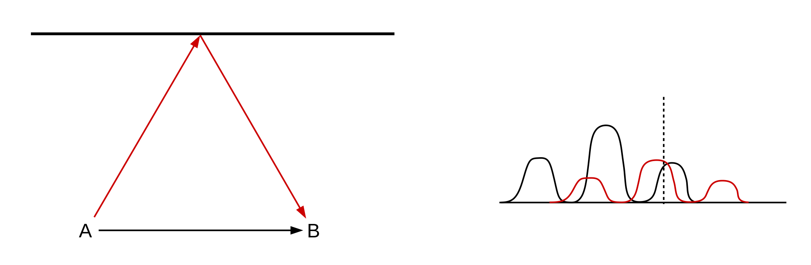
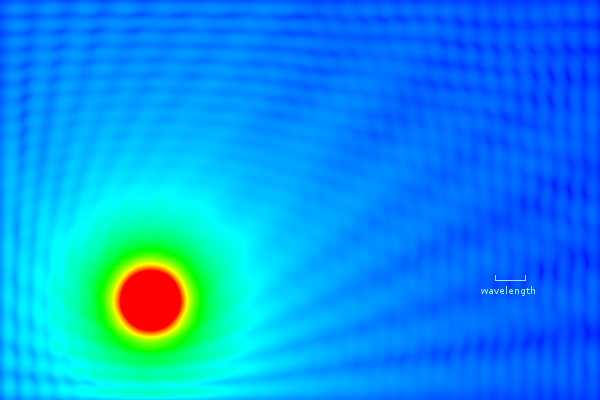
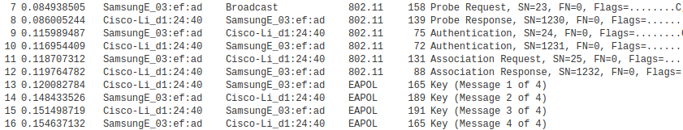
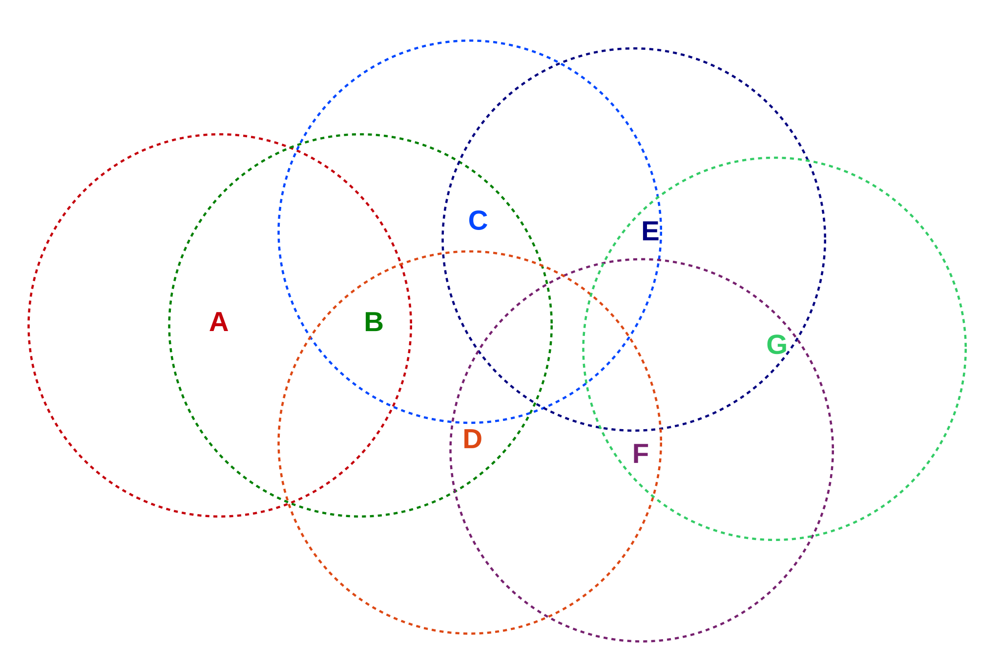
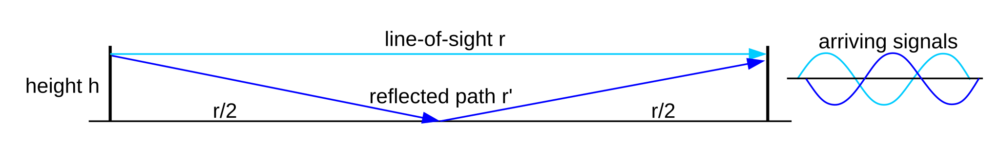

4 Wireless LANs¶
Ethernet is ubiquitous in the datacenter, and in some large corporate desktop networks. Yet many residential and employee laptops never touch an Ethernet cable; Ethernet connections for smartphones and similar devices are almost unheard of.
It would be difficult to imagine contemporary laptop networking, let alone mobile devices, without wireless networking. In both homes and offices, Wi-Fi connectivity is the norm. Mobile networking is ubiquitous. A return to being tethered by wires is unthinkable.
4.1 Adventures in Radioland¶
For this chapter we leave wires (and fiber) behind, and contemplate the transmission of packets via radio, freeing nodes from their cable tethers. Wi-fi (4.2 Wi-Fi) and mobile wireless (4.3 WiMAX and LTE) are now ubiquitous. But radio is not quite like wire, and wireless transmission of packets brings several changes.
4.1.1 Privacy¶
It’s hard to tap into wired Ethernet, especially if you are locked out of the building. But anyone can receive wireless transmissions, often from a considerable distance. The data breach at TJX Corporation was achieved by attackers parking outside a company building and pointing a directional antenna at it; encryption was used but it was weak (see 28 Security and 28.7.7 Wi-Fi WEP Encryption Failure). Similarly, Internet café visitors generally don’t want other patrons to read their email. Radio communication needs strong encryption.
4.1.2 Collisions¶
Ethernet-like collision detection is no longer feasible over radio. To some extent, this has to do with the relative signal strength of the remote signal at the local transmitter. Along a wire-based Ethernet the remote signal might be as weak as 1/100 of the transmitted signal but that 1% received signal is still detectable during transmission. However, with radio the remote signal might easily be as little as 1/1,000,000 of the transmitted signal (-60 dB), as measured at the transmitting station, and it is simply overwhelmed during transmission. Even if signal strength could be resolved, there is also the “hidden-node problem”, in the following section and also at 4.2.1.4 Hidden-Node Problem): perhaps nodes A and B can both communicate directly with C, but there is a radio-opaque wall blocking any direct communication between A and B. If A and B now transmit simultaneously, C will encounter a collision, but there is no way for A or B to detect this collision directly.
As a result, wireless protocols must be constructed appropriately. We will look at how Wi-Fi handles this in its most common mode of operation in 4.2.1 Wi-Fi and Collisions. Wi-Fi also supports its PCF mode (4.2.7 Wi-Fi Polling Mode) that involves fewer (but not zero) collisions through the use of central-point polling. Finally, WiMAX and LTE switch from polling to scheduling to further reduce collisions, though the potential for collisions is still inevitable when new stations join the network.
It is also worth pointing out that, while an Ethernet collision affects every station in the physical Ethernet (the “collision domain”), wireless collisions are local, occuring at the receiver. Two stations can transmit at the same time, and in range of one another, but without a collision! This can happen if each of the relevant receivers is in range of only one of the two transmitting stations. As an example, suppose three stations are arranged linearly, A–C–B, with the A–C and C–B distances just under the maximum effective range. When A and B both transmit there is indeed a collision at C. But when C and B transmit simultaneously, A may receive C’s signal just fine, as B’s is too weak to interfere.
4.1.4 Band Width¶
To radio engineers, “band width” (two words) means the frequency range used by a signal, not the data transmission rate. No information can be conveyed using a single frequency; even signaling by switching a carrier frequency off and on at a low rate “blurs” the carrier into a band of nonzero width.
In keeping with this we will for the remainder of this chapter use the term “data rate” for what we have previously called “bandwidth”. We will use the terms “channel width” or “width of the frequency band” for the frequency range, as “band width” is easily mistaken for “bandwidth”.
All else being equal, the data rate achievable with a radio signal is proportional to the channel width. The constant of proportionality is limited by the Shannon-Hartley theorem: the maximum data rate divided by the width of the frequency band is log2(1+SNR), where SNR is the signal to noise power ratio. If SNR is 127, for example, and the width of the frequency band is 1 MHz, then the maximum theoretical data rate is 7 Mbps, where 7 = log2(128). If the signal power S drops by about half so SNR=63, the data rate falls to 6 Mbps, as 6 = log2(64); the relationship between signal power and data rate is logarithmic.
The Shannon-Hartley theorem assumes that noise has a specific statistical form known as Gaussian white noise. It is theoretically possible that the Shannon-Hartley limit might be surpassed for some other, very specific source of noise.
4.1.4.1 OFDM¶
The actual data rate achievable, for a given channel width and SNR, depends on the signal encoding, or modulation, mechanism. Most newer modulation mechanisms use “orthogonal frequency-division multiplexing”, OFDM, or some variant.
A central feature of OFDM is that one wider frequency band is divided into multiple narrow subchannels; each subchannel then carries a proportional fraction of the total information signal, modulated onto a subchannel-specific carrier. All the subchannels can be allocated to one transmission at a time (time-division multiplexing, 6.2 Time-Division Multiplexing), or disjoint sets of subchannels can be allocated to different transmissions that can then proceed (at proportionally lower data rates) in parallel. The latter is known as frequency-division multiplexing.
In many settings OFDM comes reasonably close to the Shannon-Hartley limit. Perhaps more importantly, OFDM also performs reasonably well with multipath interference, below, which is endemic in urban and building-interior environments with their many reflective surfaces. Multipath interference is, however, not necessarily comparable to the Gaussian noise assumed by the Shannon-Hartley theorem. We will not address further technical details of OFDM here, except to note that implementation usually requires some form of digital signal processing.
The OFDMA variant, with the MA standing for Multiple Access, allows multiple users to use nonoverlapping sets of subchannels, thus allowing simultaneous transmission. It is an option available in 802.11ax.
4.1.5 Cost¶
Another fundamental issue is that everyone shares the same radio spectrum. For mobile wireless providers, this constraint has driven prices to remarkable levels; the 2014-15 FCC AWS-3 auction raised almost $45 billion for 65 MHz (usable throughout the entire United States). This works out to somewhat over $2 per megahertz per phone. The corresponding issue for Wi-Fi users in a dense area is that all the available Wi-Fi capacity may be in use. Inside busy buildings one can often see dozens of Wi-Fi access points competing for the same Wi-Fi channel; the result is that no user will be getting close to the nominal data rates of 4.2 Wi-Fi.
Higher data rates require wider frequency bands. To reduce costs in the face of fixed demand, the usual strategy is to make the coverage zones smaller, either by reducing power (and adding more access points as appropriate), or by using directional antennas, or both.
4.1.6 Multipath¶
While a radio signal generally covers a wide area – even with ordinary directional antennas – it does so in surprisingly non-uniform ways. A signal may reach a receiver through a line-of-sight path and also several reflected paths, possibly of varying length. In addition to reflection, the signal may be subject to reflection-like scattering and diffraction. All of this together is known as multipath interference (or, if analog audio is involved, multipath distortion; in the analog TV era this was ghosting).

Fig. 21: Left: Line-of-sight and reflected signals; Right: Resulting superposition of encoded data
The picture above shows two transmission paths from A to B. The respective carrier paths may interfere with or supplement one another. The longer delay of the reflecting path (red) will also delay its encoded signal. The result, shown at right, is that the line-of-sight and reflected data symbols may overlap and interfere with each other; this is known as intersymbol interference. Multipath interference may even change the meaning of the data symbol as seen by the receiver; for example, the red and black low data-signal peaks above at the point of the vertical dashed line may sum together so as to be received as a higher peak (assuming the underlying carriers are in sync).
Multipath interference tends to lead to wide fluctuations in signal intensity with a period of about half a wavelength; this phenomenon is known as multipath fading. As an example, the wavelength of FM radio stations in the United States is about 3 meters; in fringe reception areas it is not uncommon to pull a car forward a quarter wavelength and have a station go from clear to indecipherable, or even for reception to switch to another station (on the same frequency but transmitted from another location) altogether.

Fig. 22: Signal-intensity map (simulated) in a room with walls with 40% reflectivity
The picture above is from a mathematical simulation intended to illustrate multipath fading. The walls of the room reflect 40% of the signal from the transmitter located in the orange ball at the lower left. The transmitter transmits an unmodulated carrier signal, which may be reflected off the walls any number of times; at any point in the room the total signal intensity is the sum over all possible reflection paths. On the right-hand side, the small-scale blue ripples represent the received carrier strength variation due to multipath interference between the line-of-sight and all the reflected paths. Note that the ripple size is about half a wavelength.
In comparison to this simulated intensity map, real walls tend to have a lower reflectivity, real rooms are not two-dimensional, and real carriers are modulated. However, real rooms also introduce scattering, diffraction and shadowing from objects within, and significant (3× to 10×) multipath-fading signal-strength variations are common in actual wireless settings.
Multipath fading can be either flat – affecting all frequencies more or less equally – or selective – affecting some frequencies differently than others. It is quite possible for an OFDM channel (4.1.4.1 OFDM) to encounter selective fading of only some of its subchannel frequencies.
Generally, multipath interference is a problem that engineers go to great lengths to overcome. However, as we shall see in 4.2.3 Multiple Spatial Streams, multipath interference can sometimes be put to positive use by allowing almost-adjacent antennas to transmit and receive independent signals, thus increasing the effective throughput.
For an alternative example of multipath interference in which the signal strength has no ripples, see exercise 6.0.
4.1.7 Power¶
If you are cutting the network cable and replacing it with wireless, there is a good chance you will also want to cut the power cable as well and replace it with batteries. This tends to make power consumption a very important issue. The Wi-Fi standard has provisions for minimizing power usage by allowing a device to “doze” most of the time, waking periodically to check if any packets are ready to be sent to it (see 4.2.4.1 Joining a Network). The 6LoWPAN project (IPv6 Low-power Wireless Personal Area Network) is intended to support very low-power devices; see RFC 4919 and RFC 6282.
4.1.8 Tangle¶
Wireless is also used simply to replace cords and their attendant tangle, and, of course, the problem of incompatible connectors. The low-power Bluetooth wireless standard is commonly used as a cable alternative for things like computer mice and telephone headsets. Bluetooth is also a low-power network; for many applications the working range is about 10 meters. ZigBee is another low-power small-scale network.
4.2 Wi-Fi¶
Wi-Fi is a trademark of the Wi-Fi Alliance denoting any of several IEEE wireless-networking protocols in the 802.11 family, specifically 802.11a, 802.11b, 802.11g, 802.11n, 802.11ac and 802.11ax. (Strictly speaking, these are all amendments to the original 802.11 standard, but they are also de facto standards in their own right.) Like classic Ethernet, Wi-Fi must deal with collisions; unlike Ethernet, however, Wi-Fi is unable to detect collisions in progress, complicating the backoff and retransmission algorithms. See 4.1.2 Collisions above.
Unlike any wired LAN protocol we have considered so far, in addition to normal data packets Wi-Fi also uses control and management packets that exist entirely within the Wi-Fi LAN layer; these are not initiated by or delivered to higher network layers. Control packets are used to compensate for some of the infelicities of the radio environment, such as the lack of collision detection. Putting radio-essential control and management protocols within the Wi-Fi layer means that the IP layer can continue to interact with the Wi-Fi LAN exactly as it did with Ethernet; no changes are required.
Wi-Fi is designed to interoperate freely with Ethernet at the logical LAN layer. Wi-Fi MAC (physical) addresses have the same 48-bit size as Ethernet’s and the same internal structure (2.1.3 Ethernet Address Internal Structure). They also share the same namespace: one is never supposed to see an Ethernet and a Wi-Fi interface with the same address. As a result, data packets can be forwarded by switches between Ethernet and Wi-Fi; in many respects a Wi-Fi LAN attached to an Ethernet LAN looks like an extension of the Ethernet LAN. See 4.2.4 Access Points.
Traditionally, Wi-Fi used the 2.4 GHz ISM (Industrial, Scientific and Medical) band used also by microwave ovens, though 802.11a used a 5 GHz band, 802.11n supports that as an option and the new 802.11ac has returned to using 5 GHz exclusively. The 5 GHz band has reduced ability to penetrate walls, often resulting in a lower effective range (though in offices and multi-unit housing this can be an advantage). The 5 GHz band provides many more usable channels than the 2.4 GHz band, resulting in much less interference in “crowded” environments.
Wi-Fi radio spectrum is usually unlicensed, meaning that no special permission is needed to transmit but also that others may be trying to use the same frequency band simultaneously. The availability of unlicensed channels in the 5 GHz band continues to improve.
The table below summarizes the different Wi-Fi versions. All data bit rates assume a single spatial stream; channel widths are nominal. The names in the far-right column have been introduced by the Wi-Fi Alliance as a more convenient designation for the newer versions.
| IEEE name | maximum bit rate | frequency | channel width | new name |
|---|---|---|---|---|
| 802.11a | 54 Mbps | 5 GHz | 20 MHz | |
| 802.11b | 11 Mbps | 2.4 GHz | 20 MHz | |
| 802.11g | 54 Mbps | 2.4 GHz | 20 MHz | |
| 802.11n | 65-150 Mbps | 2.4/5 GHz | 20-40 MHz | Wi-Fi 4 |
| 802.11ac | 78-867 Mbps | 5 GHz | 20-160 MHz | Wi-Fi 5 |
| 802.11ax | Up to 1200 Mbps | 2.4/5+ GHz | 20-160 MHz | Wi-Fi 6 |
The maximum bit rate is seldom achieved in practice. The effective bit rate must take into account, at a minimum, the time spent in the collision-handling mechanism. More significantly, all the Wi-Fi variants above use dynamic rate scaling, below; the bit rate is reduced up to tenfold (or more) in environments with higher error rates, which can be due to distance, obstructions, competing transmissions or radio noise. All this means that, as a practical matter, getting 150 Mbps out of 802.11n requires optimum circumstances; in particular, no competing senders and unimpeded line-of-sight transmission. 802.11n lower-end performance can be as little as 10 Mbps, though 40-100 Mbps (for a 40 MHz channel) may be more typical.
The 2.4 GHz ISM band is divided by international agreement into up to 14 officially designated (and mostly adjacent) channels, each about 5 MHz wide, though in the United States use may be limited to the first 11 channels. The 5 GHz band is similarly divided into 5 MHz channels. One Wi-Fi sender, however, needs several of these official channels; the typical 2.4 GHz 802.11g transmitter uses an actual frequency range of up to 22 MHz, or up to five official channels. As a result, to avoid signal overlap Wi-Fi use in the 2.4 GHz band is often restricted to official channels 1, 6 and 11. The end result is that there are generally only three available Wi-Fi bands in the 2.4 GHz range, and so Wi-Fi transmitters can and do interact with and interfere with each other.
There are almost 200 5 MHz channels in the 5 GHz band. The United States requires users of the this band to avoid interfering with weather and military applications in the same frequency range; this may involve careful control of transmission power (under the IEEE 802.11h amendment) and so-called “dynamic frequency selection” to choose channels with little interference, and to switch to such channels if interference is detected later. Even so, there are many more channels than at 2.4 GHz; the larger number of channels is one of the reasons (arguably the primary reason) that 802.11ac can run faster (below). The number of channels available for Wi-Fi use has been increasing, often as conflicts with existing 5 GHz weather systems are resolved.
802.11ax has preliminary support for additional frequency bands in the 6-7 GHz range, though these are still awaiting (in the US) final FCC approval.
Wi-Fi designers can improve throughput through a variety of techniques, including
- improved radio modulation techniques
- improved error-correcting codes
- smaller guard intervals between symbols
- increasing the channel width
- allowing multiple spatial streams via multiple antennas
The first two in this list seem now to be largely tapped out; OFDM modulation (4.1.4.1 OFDM) is close enough to the Shannon-Hartley limit that there is limited room for improvement, though 802.11ax saw fit to move to OFDMA. The third reduces the range (because there is less protection from multipath interference) but may increase the data rate by ~10%; 802.11ax introduced support for dynamic changing of guard-interval and symbol size. The largest speed increases are obtained the last two items in the list.
The channel width is increased by adding additional 5 MHz channels. For example, the 65 Mbps bit rate above for 802.11n is for a nominal frequency range of 20 MHz, comparable to that of 802.11g. However, in areas with minimal competition from other signals, 802.11n supports using a 40 MHz frequency band; the bit rate then goes up to 135 Mbps (or 150 Mbps if a smaller guard interval is used). This amounts to using two of the three available 2.4 GHz Wi-Fi bands. Similarly, the wide range in 802.11ac bit rates reflects support for using channel widths ranging from 20 MHz up to 160 MHz (32 5-MHz official channels).
Using multiple spatial streams is the newest data-rate-improvement technique; see 4.2.3 Multiple Spatial Streams.
For all the categories in the table above, additional bits are used for error-correcting codes. For 802.11g operating at 54 Mbps, for example, the actual raw bit rate is (4/3)×54 = 72 Mbps, sent in symbols consisting of six bits as a unit.
4.2.1 Wi-Fi and Collisions¶
We looked extensively at the 10 Mbps Ethernet collision-handling mechanisms in 2.1 10-Mbps Classic Ethernet, only to conclude that with switches and full-duplex links, Ethernet collisions are rapidly becoming a thing of the past. Wi-Fi, however, has brought collisions back from obscurity. An Ethernet sender will discover a collision, if one occurs, during the first slot time, by monitoring for faint interference with its own transmission. However, as mentioned in 4.1.2 Collisions, Wi-Fi transmitting stations simply cannot detect collisions in progress. If another station transmits at the same time, a Wi-Fi sender will see nothing amiss although its signal will not be received. While there is a largely-collision-free mode for Wi-Fi operation (4.2.7 Wi-Fi Polling Mode), it is not commonly used, and collision management has a significant impact on ordinary Wi-Fi performance.
4.2.1.1 Link-Layer ACKs¶
The first problem with Wi-Fi collisions is even detecting them. Because of the inability to detect collisions directly, the Wi-Fi protocol adds link-layer ACK packets, at least for unicast transmission. These ACKs are our first example of Wi-Fi control packets and are unrelated to the higher-layer TCP ACKs.
The reliable delivery of these link-layer ACKs depends on careful timing. There are three time intervals applicable (numeric values here are for 802.11b/g in the 2.4 GHz band). The value we here call IFS is more formally known as DIFS (D for “distributed”; see 4.2.7 Wi-Fi Polling Mode).
- slot time: 20 µsec
- IFS, the “normal” InterFrame Spacing: 50 µsec
- SIFS, the short IFS: 10 µsec
For comparison, note that the RTT between two Wi-Fi stations 100 meters apart is less than 1 µsec. At 11 Mbps, one IFS time is enough to send about 70 bytes; at 54 Mbps it is enough to send almost 340 bytes.
Once a station, say C, has received a data packet addressed to it, say from A, it waits for time SIFS and sends its ACK. In a small Wi-Fi domain in which every station’s signal is clearly visible to every other station, at this point in time C will be the only station authorized to send, because, as we will see in the next section, all other stations (including those on someone else’s overlapping Wi-Fi) that have seen A’s data transmission will be required to wait the longer IFS period following the end of that transmission. These other stations will detect C’s ACK before the IFS time has elapsed and will thus not interfere with it.
Unfortunately the hidden-note problem complicates this picture. Only stations that have seen A’s data transmission will wait the IFS interval. But there might be – and often are – other stations not within range of A and so unaware of the IFS-wait requirement, but which are still capable of interfering with C. (Somewhat surprisingly, sometimes everything works out for the best even so: the other station’s transmission might collide with C’s ACK at C, but might be too weak to interfere with C’s ACK at the point it has reached A, which is where it matters.) See exercise 1.0.
If a packet is involved in a collision, the receiver will send no ACK, so the sender will know something went awry. Unfortunately, the sender will not be able to tell whether the problem was due to a collision, or electromagnetic interference, or signal blockage, or excessive distance, or the receiver’s being powered off. But as a collision is usually the most likely cause, and as assuming the lost packet was involved in a collision results in, at worst, a slight additional delay in retransmission, a collision will always be assumed.
Link-Layer ACKs contain no information – such as a sequence number – that identifies the packet being acknowledged. These ACKs simply acknowledge the most recent transmission, the one that ended one SIFS earlier. In the Wi-Fi context, this is unambiguous. It may be compared, however, to 8.1 Building Reliable Transport: Stop-and-Wait, where at least one bit of packet sequence numbering is required.
4.2.1.2 Collision Avoidance and Backoff¶
The Ethernet collision-management algorithm was known as CSMA/CD, where CD stood for Collision Detection. The corresponding Wi-Fi mechanism is CSMA/CA, where CA stands for Collision Avoidance. A collision is presumed to have occurred if the link-layer ACK is not received. As with Ethernet, there is an exponential-backoff mechanism as well, though it is scaled somewhat differently.
Any sender wanting to send a new data packet waits the IFS time after first sensing the medium to see if it is idle. If no other traffic is seen in this interval, the station may then transmit immediately. However, if other traffic is sensed, the sender must do an exponential backoff even for its first transmission attempt; other stations, after all, are likely also waiting, and avoiding an initial collision is strongly preferred.
The initial backoff is to choose a random k<25 = 32 (recall that classic Ethernet in effect chooses an initial backoff of k<20 = 1; ie k=0). The prospective sender then waits k slot times. While waiting, the sender continues to monitor for other traffic; if any other transmission is detected, then the sender “suspends” the backoff-wait clock. The clock resumes when the other transmission has completed and one followup idle interval of length IFS has elapsed.
Note that, under these rules, data-packet senders always wait for at least one idle interval of length IFS before sending, thus ensuring that they never collide with an ACK sent after an idle interval of only SIFS.
On an Ethernet, if two stations are waiting for a third to finish before they transmit, they will both transmit as soon as the third is finished and so there will always be an initial collision. With Wi-Fi, because of the larger initial k<32 backoff range, such initial collisions are unlikely.
If a Wi-Fi sender believes there has been a collision, it retries its transmission, after doubling the backoff range to 64, then 128, 256, 512, 1024 and again 1024. If these seven attempts all fail, the packet is discarded and the sender starts over.
In one slot time, radio signals move 6,000 meters; the Wi-Fi slot time – unlike that for Ethernet – has nothing to do with the physical diameter of the network. As with Ethernet, though, the Wi-Fi slot time represents the fundamental unit for backoff intervals.
Finally, we note that, unlike Ethernet collisions, Wi-Fi collisions are a local phenomenon: if A and B transmit simultaneously, a collision occurs at node C only if the signals of A and B are both strong enough at C to interfere with one another. It is possible that a collision occurs at station C midway between A and B, but not at station D that is close to A. We return to this below in 4.2.1.4 Hidden-Node Problem.
4.2.1.3 Wi-Fi RTS/CTS¶
Wi-Fi stations optionally also use a request-to-send/clear-to-send (RTS/CTS) protocol, again negotiated with designated control packets. Usually this is used only for larger data packets; often, the RTS/CTS “threshold” (the size of the largest packet not sent using RTS/CTS) is set (as part of the Access Point configuration, 4.2.4 Access Points) to be the maximum packet size, effectively disabling this feature. The idea behind RTS/CTS is that a large packet that is involved in a collision represents a significant waste of potential throughput; for large packets, we should ask first.
The RTS control packet – which is small – is sent through the normal procedure outlined above; this packet includes the identity of the destination and the size of the data packet the station desires to transmit. The destination station then replies with CTS after the SIFS wait period, effectively preventing any other transmission after the RTS. The CTS packet also contains the data-packet size. The original sender then waits for SIFS after receiving the CTS, and sends the packet. If all other stations can hear both the RTS and CTS messages, then once the RTS and CTS are sent successfully no collisions should occur during packet transmission, again because the only idle times are of length SIFS and other stations should be waiting for time IFS.
4.2.1.5 Wi-Fi Fragmentation¶
Conceptually related to RTS/CTS is Wi-Fi fragmentation. If error rates or collision rates are high, a sender can send a large packet as multiple fragments, each receiving its own link-layer ACK. As we shall see in 7.3.1 Error Rates and Packet Size, if bit-error rates are high then sending several smaller packets often leads to fewer total transmitted bytes than sending the same data as one large packet.
Wi-Fi packet fragments are reassembled by the receiving node, which may or may not be the final destination.
As with the RTS/CTS threshold, the fragmentation threshold is often set to the size of the maximum packet. Adjusting the values of these thresholds is seldom necessary, though might be appropriate if monitoring revealed high collision or error rates. Unfortunately, it is essentially impossible for an individual station to distinguish between reception errors caused by collisions and reception errors caused by other forms of noise, and so it is hard to use reception statistics to distinguish between a need for RTS/CTS and a need for fragmentation.
4.2.2 Dynamic Rate Scaling¶
Wi-Fi senders, if they detect transmission problems, are able to reduce their transmission bit rate in a process known as rate scaling or rate control. The idea is that lower bit rates will have fewer noise-related errors, and so as the error rate becomes unacceptably high – perhaps due to increased distance – the sender should fall back to a lower bit rate. For 802.11g, the standard rates are 54, 48, 36, 24, 18, 12, 9 and 6 Mbps. Senders attempt to find the transmission rate that maximizes throughput; for example, 36 Mbps with a packet loss rate of 25% has an effective throughput of 36 × 75% = 27 Mbps, and so is better than 24 Mbps with no losses.
Senders may update their bit rate on a per-packet basis; senders may also choose different bit rates for different recipients. For example, if a sender sends a packet and receives no confirming link-layer ACK, the sender may fall back to the next lower bit rate. The actual bit-rate-selection algorithm lives in the particular Wi-Fi driver in use; different nodes in a network may use different algorithms.
The earliest rate-scaling algorithm was Automatic Rate Fallback, or ARF, [KM97]. The rate decreases after two consecutive transmission failures (that is, the link-layer ACK is not received), and increases after ten transmission successes.
A significant problem for rate scaling is that a packet loss may be due either to low-level random noise (white noise, or thermal noise) or to a collision (which is also a form of noise, but less random); only in the first case is a lower transmission rate likely to be helpful. If a larger number of collisions is experienced, the longer packet-transmission times caused by the lower bit rate may increase the frequency of hidden-node collisions. In fact, a higher transmission rate (leading to shorter transmission times) may help; enabling the RTS/CTS protocol may also help.
A variety of newer rate-scaling algorithms have been proposed; see [JB05] for a summary. One, Receiver-Based Auto Rate (RBAR, [HVB01]), attempts to incorporate the signal-to-noise ratio into the calculation of the transmission rate. This avoids the confusion introduced by collisions. Unfortunately, while the signal-to-noise ratio has a strong theoretical correlation with the transmission bit-error rate, most Wi-Fi radios will report to the host system the received signal strength. This is not the same as the signal-to-noise ratio, which is harder to measure. As a result, the RBAR approach has not been quite as effective in practice as might be hoped.
With the Collision-Aware Rate Adaptation algorithm (CARA, [KKCQ06]), a transmitting station attempts (among other things) to infer that its packet was lost to a collision rather than noise if, after one SIFS interval following the end of its packet transmission, no link-layer ACK has been received and the channel is still busy. This will detect collisions only when the colliding packet is longer than the station’s own packet, and only when the hidden-node problem isn’t an issue.
Because the actual data in a Wi-Fi packet may be sent at a rate not every participant is close enough to receive correctly, every Wi-Fi transmission begins with a brief preamble at the minimum bit rate. Link-layer ACKs, too, are sent at the minimum bit rate.
4.2.3 Multiple Spatial Streams¶
The latest innovation in improving Wi-Fi (and other wireless) data rates is to support multiple simultaneous data streams, through an antenna technique known as multiple-input-multiple-output, or MIMO. To use N streams, both sender and receiver must have N antennas; all the antennas use the same frequency channels but each transmitter antenna sends a different data stream. At first glance, any significant improvement in throughput might seem impossible, as the antenna elements in the respective sending and receiving groups are each within about half a wavelength of each other; indeed, in clear space MIMO is not possible.
The reason MIMO works in most everyday settings is that it puts multipath interference to positive use. Consider again at the right-hand side of the final image of 4.1.6 Multipath, in which the signal strength varies according to the blue ripples; the peaks and valleys have a period of about half a wavelength. We will assume initially that the signal strength is low enough that reception in the darkest blue areas is no longer viable; a single antenna with the misfortune to be in one of these “dead zones” may receive nothing.
We will start with two simpler cases: SIMO (single-input-multiple-output) and MISO (multiple-input-single-output). In SIMO, the receiver has multiple antennas; in MISO, the transmitter. Assume for the moment that the multiple-antenna side has two antennas. In the simplest implementation of SIMO, the receiver picks the stronger of the two received signals and uses that alone; as long as at least one antenna is not in a “dead zone”, reception is successful. With two antennas under half a wavelength apart, the odds are that at least one of them will be located outside a dead zone, and will receive an adequate signal.
Similarly, in simple MISO, the transmitter picks whichever of its antennas that gets a stronger signal to the receiver. The receiver is unlikely to be in a dead zone for both transmitter antennas. Note that for MISO the sender must get some feedback from the receiver to know which antenna to use.
We can do quite a bit better if signal-processing techniques are utilized so the two sender or two receiver antennas can be used simultaneously (though this complicates the mathematics considerably). Such signal-processing is standard in 802.11n and above; the Wi-Fi header, to assist this process, includes added management packets and fields for reporting MIMO-related information. One station may, for example, send the other a sequence of training symbols for discerning the response of the antenna system.
MISO with these added techniques is sometimes called beamforming: the sender coordinates its multiple antennas to maximize the signal reaching one particular receiver.
In our simplistic description of SIMO and MIMO above, in which only one of the multiple-antenna-side antennas is actually used, we have suggested that the idea is to improve marginal reception. At least one antenna on the multiple-antenna side can successfully communicate with the single antenna on the other side. MIMO, on the other hand, can be thought of as applying when transmission conditions are quite good all around, and every antenna on one side can reach every antenna on the other side. The key point is that, in an environment with a significant degree of multipath interference, the antenna-to-antenna paths may all be independent, or uncorrelated. At least one receiving antenna must be, from the perspective of at least one transmitting antenna, in a multipath-interference “gray zone” of reduced signal strength. Typically the distance from a “gray zone” to a peak zone is half a wavelength, or, for 2.4 GHz, about 6 cm.
Fig. 25: MIMO antennas
As a specific example, consider the diagram above, with two sending antennas A1 and A2 at the left and two receiving antennas B1 and B2 at the right. Antenna A1 transmits signal S1 and A2 transmits S2. There are thus four physical signal paths: A1-to-B1, A1-to-B2, A2-to-B1 and A2-to-B2. If we assume that the signal along the A1-to-B2 path (dashed and blue) arrives with half the strength of the other three paths (solid and black), then we have
signal received by B1: S1 + S2signal received by B2: S1/2 + S2
From these, B can readily solve for the two independent signals S1 and S2. These signals are said to form two spatial streams, though the spatial streams are abstract and do not correspond to any of the four physical signal paths.
The antennas are each more-or-less omnidirectional; the signal-strength variations come from multipath interference and not from physical aiming. Similarly, while the diagonal paths A1-to-B2 and A2-to-B1 are slightly longer than the horizontal paths A1-to-B1 and A2-to-B2, the difference is not nearly enough to allow B to solve for the two signals.
In practice, overall data-rate improvement over a single antenna can be considerably less than a factor of 2 (or than N, the number of antennas at each end).
The 802.11n standard allows for up to four spatial streams, for a theoretical maximum bit rate of 600 Mbps. 802.11ac allows for up to eight spatial streams, for an even-more-theoretical maximum of close to 7 Gbps. MIMO support is sometimes described with an A×B×C notation, eg 3×3×2, where A and B are the number of transmitting and receiving antennas and C ≤ min(A,B) is the number of spatial streams.
4.2.4 Access Points¶
There are two standard Wi-Fi configurations: infrastructure and ad hoc. The former involves connection to a designated access point; the latter includes individual Wi-Fi-equipped nodes communicating informally. For example, two laptops can set up an ad hoc connection to transfer data at a meeting. Ad hoc connections are often used for very simple networks not providing Internet connectivity. Complex ad hoc networks are, however, certainly possible; see 4.2.8 MANETs.
The infrastructure configuration is much more common. Stations in an infrastructure network communicate directly only with their access point, which, in turn, communicates with the outside world. If Wi-Fi nodes B and C share access point AP, and B wishes to send a packet to C, then B first forwards the packet to AP and AP then forwards it to C. While this introduces a degree of inefficiency, it does mean that the access point and its associated nodes automatically act as a true LAN: every node can reach every other node. (It is also often the case that most traffic is between Wi-Fi nodes and the outside world.) In an ad hoc network, by comparison, it is common for two nodes to be able to reach each other only by forwarding through an intermediate third node; this is in fact a form of the hidden-node scenario.
Wi-Fi access points are generally identified by their SSID (“Service Set IDentifier”), an administratively defined human-readable string such as “linksys” or “loyola”. Ad hoc networks also have SSIDs; these are generated pseudorandomly at startup and look like (but are not) 48-bit MAC addresses.
Many access points can support multiple SSIDs simultaneously. For example, an access point might support SSID “guest” with limited authentication (below), and also SSID “secure” with much stronger authentication.
Finally, Wi-Fi is by design completely interoperable with Ethernet; if station A is associated with access point AP, and AP also connects via (cabled) Ethernet to station B, then if A wants to send a packet to B it sends it using AP as the Wi-Fi destination but with B also included in the header as the “actual” destination. Once it receives the packet by wireless, AP acts as an Ethernet switch and forwards the packet to B. While this forwarding is transparent to senders, the Ethernet and Wi-Fi LAN header formats are quite different.
Fig. 26: Top: Ethernet packet format; Bottom: Wi-Fi packet format (typical)
The above diagram illustrates an Ethernet header and the Wi-Fi header for a typical data packet (not using Wi-Fi quality-of-service features). The Ethernet type field usually moves to an IEEE Logical Link Control header in the Wi-Fi region labeled “data”. The receiver and transmitter addresses are the MAC addresses of the nodes receiving and transmitting the (unicast) packet; these may each be different from the ultimate destination and source addresses. If station B wants to send a packet to station C in the same network, the source and destination are B and C but the transmitter and receiver are B and the access point. In infrastructure mode either the receiver or transmitter address is always the access point; in typical situations either the receiver is the destination or the sender is the transmitter. In ad hoc mode, if LAN-layer routing is used then all four addresses may be distinct; see 4.2.8.1 Routing in MANETs.
4.2.4.1 Joining a Network¶
To join the network, an individual station must first discover its access point, and must associate and then authenticate to that access point before general communication can begin. (Older forms of authentication – so-called “open” authentication and the now-deprecated WEP authentication – came before association, but newer authentication protocols such as WPA2, WPA2-Personal and WPA2-Enterprise (4.2.5 Wi-Fi Security) come after.) We can summarize the stages in the process as follows:
- scanning (or active probing)
- open-authentication and association
- true authentication
- DHCP (getting an IP address, 10.3 Dynamic Host Configuration Protocol (DHCP))
The association and authentication processes are carried out by an exchange of special management packets, which are confined to the Wi-Fi LAN layer. Occasionally stations may re-associate to their Access Point, eg if they wish to communicate some status update.
Access points periodically broadcast their SSID in special beacon packets (though for pseudo-security reasons the SSID in the beacon packets can be suppressed). Beacon packets are one of several Wi-Fi-layer-only management packets; the default beacon-broadcast interval is 100 ms. These broadcasts allow stations to see a list of available networks; the beacon packets also contain other Wi-Fi network parameters such as radio-modulation parameters and available data rates.
Another use of beacons is to support the power-management doze mode. Some stations may elect to enter this power-conservation mode, in which case they inform the access point, record the announced beacon-transmission time interval and then wake up briefly to receive each beacon. Beacons, in turn, each contain a list (in a compact bitmap form) of each dozing station for which the access point has a packet to deliver.
Ad hoc networks have beacon packets as well; all nodes participate in the regular transmission of these via a distributed algorithm.
A connecting station may either wait for the next scheduled beacon, or send a special probe-request packet to elicit a beacon-like probe-response packet. These operations may involve listening to or transmitting on multiple radio channels, sequentially, as the station does not yet know the correct channel to use. Unconnected stations often send probe-request packets at regular intervals, to keep abreast of available networks; it is these probe packets that allow tracking by the station’s MAC address. See 4.2.4.2 MAC Address Randomization. (The number of probe requests can be startlingly high; [HSBS15] measured thousands per minute in some circumstances. This is more than sufficient to have a serious impact on both battery life and on available throughput.)
Once the beacon is received, the station initiates an association process. There is still a vestigial open-authentication process that comes before association, but once upon a time this could also be “shared WEP key” authentication (below). Later, support for a wide range of authentication protocols was introduced, via the 802.1X framework; we return to this in 4.2.5 Wi-Fi Security. For our purposes here, we will include open authentication as part of the association process.
In open authentication the station sends an authentication request to the access point and the access point replies. About all the station needs to know is the SSID of the access point, though it is usually possible to configure the access point to restrict admission to stations with MAC (physical) addresses on a predetermined list. Stations sometimes evade MAC-address checking by changing their MAC address to an acceptable one, though some Wi-Fi drivers do not support this.
Because the SSID plays something of the role of a password here, some Wi-Fi access points are configured so that beacon packets does not contain the SSID; such access points are said to be hidden. Unfortunately, access points hidden this way are easily unmasked: first, the SSID is sent in the clear by any other stations that need to authenticate, and second, an attacker can often transmit forged deauthentication or disassociation requests to force legitimate stations to retransmit the SSID. (See “management frame protection” in 4.2.5 Wi-Fi Security for a fix to this last problem.)
The shared-WEP-key authentication was based on the (obsolete) WEP encryption mechanism (4.2.5 Wi-Fi Security). It involved a challenge-response exchange by which the station proved to the access point that it knew the shared WEP key. Actual WEP encryption would then start slightly later.
Once the open-authentication step is done, the next step in an infrastructure network is for the station to associate to the access point. This involves an association request from station to access point, and an association response in return. The primary goal of the association exchange is to ensure that the access point knows (by MAC address) what stations it can reach. This tells the access point how to deliver packets to the associating station that come from other stations or the outside world. Association is not necessary in an ad hoc network.
The entire connection process (including secure authentication, below, and DHCP, 10.3 Dynamic Host Configuration Protocol (DHCP)), often takes rather longer than expected, sometimes several seconds. See [PWZMTQ17] for a discussion of some of the causes. Some station and access-point pairs appear not to work as well together as other pairs.
4.2.4.2 MAC Address Randomization¶
Most Wi-Fi-enabled devices are configured to transmit Wi-Fi probe requests at regular intervals (and on all available channels), at least when not connected. These probe requests identify available Wi-Fi networks, but they also reveal the device’s MAC address. This allows sites such as stores to track customers by their device. To prevent such tracking, some devices now support MAC address randomization, proposed in [GG03]: the use at appropriate intervals of a new MAC address randomly selected by the device.
Probe requests are generally sent when the device is not joined to a network. To prevent tracking via probe requests, the simplest approach is to change the MAC address used for probes at regular, frequent intervals. A device might even change its MAC address on every probe.
Changing the MAC address used for actually joining a network is also important to prevent tracking, but introduces some complications. RFC 7844 suggests these options for selecting new random addresses:
- At regular time intervals
- Per connection: each time the device connects to a Wi-Fi network, it will select a new MAC address
- Per network: like the above, except that if the device reconnects to the same network (identified by SSID), it will use the same MAC address
The first option, changing the joined MAC address at regular time intervals, breaks things. First, it will likely result in assignment of a new IP address to the device, terminating all existing connections. Second, many sites still authenticate – at least in part – based on the MAC address. The per-connection option prevents the first problem. The per-network option prevents both, but allows a site at which the device actually joins the network to track repeat connections. (Configuring the device to “forget” the connection between successive joins will usually prevent this, but may not be convenient.)
Another approach to the tracking problem is to disable probe requests entirely, except on explicit demand.
Wi-Fi MAC address randomization is, unfortunately, not a complete barrier to device tracking; there are other channels through which devices may leak information. For example, probe requests also contain device-capability data known as Information Elements; these values are often distinctive enough that they allow at least partial fingerprinting. Additionally, it is possible to track many Wi-Fi devices based on minute variations in the modulated signals they transmit. MAC address randomization does nothing to prevent such “radiometric identification”. Access points can also impersonate other popular access points, and thus trick devices into initiating a connection with their real MAC addresses. See [BBGO08] and [VMCCP16] for these and other examples.
Finally, MAC address randomization may have applications for Ethernet as well as Wi-Fi. For example, in the original IPv6 specification, IPv6 addresses embedded the MAC address, and thus introduced the possibility of tracking a device by its IPv6 address. MAC address randomization can prevent this form of tracking as well. However, other techniques implementable solely in the IPv6 layer appear to be more popular; see 11.2.1 Interface identifiers.
4.2.4.3 Roaming¶
Large installations with multiple access points can create “roaming” access by assigning all the access points the same SSID. An individual station will stay with the access point with which it originally associated until the signal strength falls below a certain level (as determined by the station), at which point it will seek out other access points with the same SSID and with a stronger signal. In this way, a large area can be carpeted with multiple Wi-Fi access points, so as to look like one large Wi-Fi domain. The access points are often connected via a wired LAN, known as the distribution system, though the use of Wi-Fi itself to provide interconnection between access points is also an option (4.2.4.4 Mesh Networks). At any one time, a station may be associated to only one access point. In 802.11 terminology, a multiple-access-point configuration with a single SSID is known as an “extended service set” or ESS.
In order for such a large-area network to work, traffic to a wireless station, eg B, must find that station’s current access point, eg AP. To help the distribution system track B’s current location, B is required, at the time it moves from APold to AP, to send to AP a reassociation request, containing APold’s address. This sets in motion a number of things; one of them is that AP contacts APold to verify (and terminate) the former association. This reassociation process also gives AP an opportunity – not spelled out in detail in the standard – to notify the distribution system of B’s new location.
If the distribution system is a switched Ethernet supporting the usual learning mechanism (2.4 Ethernet Switches), one simple approach to roaming stations is to handle this the same way as, in a wired Ethernet, traffic finds a laptop that has been unplugged, carried to a new location, and plugged in again. Suppose our wireless node B has been exchanging packets via the distribution system with wired node C (perhaps a router connecting B to the Internet). When B moves from APold to AP, all it has to do is send any packet over the LAN to C, and the Ethernet switches on the path from B to C will then learn the route through the switched Ethernet from C back to B’s new AP, and thus to B. It is also possible for B’s new AP to send this switch-updating packet, perhaps as part of its reassociation response.
This process may leave other switches in the distribution system still holding in their forwarding tables the old location for B. This is not terribly serious, as it will be fixed for any one switch as soon as B sends a packet to a destination reached by that switch. The problem can be avoided entirely if, after moving, B (or, again, its new AP) sends out an Ethernet broadcast packet.
Running Ethernet cable to remote access points can easily dwarf the cost of the access point itself. As a result, there is considerable pressure to find ways to allow the Wi-Fi network itself to form the distribution system. We return to this below, in 4.2.4.4 Mesh Networks.
The IEEE 802.11r amendment introduced the standardization of fast handoffs from one access point to another within the same ESS. It allows the station and new access point to reuse the same pairwise master keys (below) that had been negotiated between the station and the old access point. It also slightly streamlines the reassociation process. Transitions must, however, still be initiated by the station. The amendment is limited to handoffs; it does not address finding the access point to which a particular station is associated, or routing between access points.
Because handoffs must be initiated by the station, sometimes all does not quite work out smoothly. Within an ESS, most newer devices (2018) are quite good at initiating handoffs. However, this is not always the case for older devices, and is usually still not the case for many mobile-station devices moving from one ESS to another (that is, where there is a change in the SSID). Such devices may cling to their original access point well past the distance at which the original signal ceases to provide reasonable throughput, as long as it does not vanish entirely. Many Wi-Fi “repeaters” or “extenders” (below) sold for residential use do require a second SSID, and so will often do a poor job at supporting roaming.
Some access points support proprietary methods for dealing with older mobile stations that are reluctant to transfer to a closer access point within the same ESS, though these techniques are now seldom necessary. By communicating amongst themselves, the access points can detect when a station’s signal is weak enough that a handoff would be appropriate. One approach involves having the original access point initiate a dissociation. At that point the station will reconnect to the ESS but should now connect to an access point within the ESS that has a stronger signal. Another approach involves having the access points all use the same MAC address, so they are indistinguishable. Whichever access point receives the strongest signal from the station is the one used to transmit to the station.
4.2.4.4 Mesh Networks¶
Being able to move freely around a multiple-access-point Wi-Fi installation is very important for many users. When such a Wi-Fi installation is created in a typical office building pre-wired for Ethernet, the access points all plug into the Ethernet, which becomes the distribution network. However, in larger-scale residential settings, and even many offices, running Ethernet cable may be prohibitively expensive. In such cases it makes sense to have the access points interconnect via Wi-Fi itself. If Alice associates to access point A and sends a packet destined for the outside world, then perhaps A will have to forward the packet to Wi-Fi node B, which will in turn forward it to C, before delivery can be complete.
This is sometimes easier said than done, however, as the original Wi-Fi standards did not provide for the use of Wi-Fi access points as “repeaters”; there was no standard mechanism for a Wi-Fi-based distribution network.
One inexpensive approach is to use devices sometimes sold as Wi-Fi “extenders”. Such devices typically set up a new SSID, and forward all traffic to the original SSID. Multi-hop configurations are possible, but must usually be configured manually. Because the original access point and the extender have different SSIDs, many devices will not automatically connect to whichever is closer, preferring to stick to the SSID originally connected to until that signal essentially disappears completely. This is, for many mobile users, reason enough to give up on this strategy.
The desire for a Wi-Fi-based distribution network has led to multiple proprietary solutions. It is possible to purchase a set of Wi-Fi “mesh routers” (2018), often sold at a considerable premium over “standard” routers. After they are set up, these generally work quite well: they present a single SSID, and support fast handoffs from one access point to another, without user intervention. To the user, coverage appears seamless.
The downside of a proprietary mechanism, however, is that once you buy into one solution, equipment from other vendors will seldom interoperate. This has led to pressure for standardization. The IEEE introduced “mesh networking” in its 802.11s amendment, finalized as part of the 2012 edition of the full 802.11 standard; it was slow to catch on. The Wi-Fi Alliance introduced the Wi-Fi EasyMesh solution in 2018, based on 802.11s, but, as of the initial rollout, no vendors were yet on board.
We will assume, for the time being, that Wi-Fi mesh networking is restricted to the creation of a distribution network interconnecting the access points; ordinary stations do not participate in forwarding other users’ packets through the mesh. Common implementations often take this approach, but in fact the 802.11s amendment allows more general approaches.
In creating a mesh network with a Wi-Fi distribution system – proprietary or 802.11s – the participating access points must address the following issues:
- They must authenticate to one another
- They must identify the correct access point to reach a given station B
- They must correctly handle station B’s movement to a different access point
- They must agree on how to route, through the mesh of access points, between the station and the connection to the Internet
Eventually the routing issue becomes the same routing problem faced by MANETs (4.2.8 MANETs), although restricted to the (simpler) case where all nodes are under common management. Routing is not trivial; the path A→B→C might be shorter than the alternative path A→D→E→C, but support a lower data rate.
The typical 802.11s solution is to have the multiple access points participate in a mesh BSS. This allows all the access points to appear to be on a single LAN. In this setting, the mesh BSS is separate from the ESS seen by the user stations, and is only used for inter-access-point communication.
One (or more) access points are typically connected to the Internet; these are referred to as root mesh stations.
In the 802.11s setting, mesh discovery is achieved via initial configuration of a mesh SSID, together with a WPA3 passphrase. Mutual authentication is then via WPA3, below; it is particularly important that each pair of stations authenticate symmetrically to one another.
If station B associates to access point AP, then AP uses the mesh BSS to deliver packets sent by B to the root mesh station (or to some other AP). For reverse traffic, B’s reassociation request sent to AP gives AP an opportunity to interact with the mesh BSS to update B’s new location. The act of B’s sending a packet via AP will also tell the mesh BSS how to find B.
Routing through the mesh BSS is handled via the HWMP protocol, 13.4.3 HWMP. This protocol typically generates a tree of station-to-station links (that is, a subset of all links that contains no loops), based at the root station. This process uses a routing metric that is tuned to the wireless environment, so that high-throughput and low-error links are preferred.
If a packet is routed through the mesh BSS from station A to station B, then more addresses are needed in the packet header. The ultimate source and destination are A and B, and the transmitter and receiver correspond to the specific hop, but the packet also needs a source and destination within the mesh, perhaps corresponding to the two access points to which A and B connect. 802.11s handles this by adding a mesh control field consisting of some management fields (such as TTL and sequence number) and a variable-length block of up to three additional addresses.
It is also possible for ordinary stations to join the 802.11s mesh BSS directly, rather than restricting the mesh BSS to the access points. This means that the stations will participate in the mesh as routing nodes. It is hard to predict, in 2018, how popular this will become.
The EasyMesh standard of the Wi-Fi Alliance is not exactly the same as the IEEE 802.11s standard. For one thing, the EasyMesh standard specifies that one access point – the one connected to the Internet – will be a “Multi-AP” Controller; the other access points are called Agents. The EasyMesh standard also incorporates parts of the IEEE 1905.1 standard for home networks, which simplifies initial configuration.
4.2.5 Wi-Fi Security¶
Unencrypted Wi-Fi traffic is visible to anyone nearby with an appropriate receiver; this eavesdropping zone can be expanded by use of a larger antenna. Because of this, Wi-Fi security is important, and Wi-Fi supports several types of traffic encryption.
The original – and now obsolete – Wi-Fi encryption standard was Wired-Equivalent Privacy, or WEP. It involved a 5-byte key, later sometimes extended to 13 bytes. The encryption algorithm was based on RC4, 28.7.4.1 RC4. The key was a pre-shared key, manually configured into each station.
Because of the specific way WEP made use of the RC4 cipher, it contained a fatal (and now-classic) flaw. Bytes of the key could be could be “broken” – that is, guessed – sequentially. Knowing bytes 0 through i−1 would allow an attacker to guess byte i with a relatively small amount of data, and so on through the entire key. See 28.7.7 Wi-Fi WEP Encryption Failure for details.
WEP was replaced with Wi-Fi Protected Access, or WPA. This used the so-called TKIP encryption algorithm that, like WEP, was ultimately based on RC4, but which was immune to the sequential attack that made WEP so vulnerable. WPA was later replaced by WPA2 as part of the IEEE 802.11i amendment, which uses the presumptively stronger AES encryption (28.7.2 Block Ciphers); the variant used by WPA2 is known as CCMP. WPA2 encryption is believed to be quite secure, although there was a vulnerability in the associated Wi-Fi Protected Setup protocol. In the 802.11i standard, WPA2 is known as the robust security network protocol. Access points supporting WPA or WPA2 declare this in their beacon and probe-response packets; these packets also include a list of acceptable ciphers.
WPA2 (and WPA) comes in two flavors: WPA2-Personal and WPA2-Enterprise. These use the same AES encryption, but differ in how keys are managed. WPA2-Personal, appropriate for many smaller sites, uses a pre-shared master key, known as the PSK. This key must be entered into the Access Point (ideally not over the air) and into each connecting station. The key is usually a secure hash (28.6 Secure Hashes) of a passphrase. The use of a single key for multiple stations makes changing the key, or revoking the key for a particular user, difficult.
In 2018, the IEEE introduced WPA3, intended to fix a host of accumulated issues. Perhaps the most important change is that WPA3-Personal switches from the WPA2 four-way handshake to the SAE mutual-password-authentication mechanism, 28.8.2 Simultaneous Authentication of Equals. We return to WPA3 below, at 4.2.5.3 WPA3.
4.2.5.1 WPA2 Four-way handshake¶
In any secure Wi-Fi authentication protocol, the station must authenticate to the access point and the access point must authenticate to the station; without the latter part, stations might inadvertently connect to rogue access points, which would then likely gain at least partial access to private data. This bidirectional authentication is achieved through the so-called four-way handshake, which also generates a session key, known as the pairwise transient key or PTK, that is independent of the master key. Compromise of the PTK should not allow an attacker to determine the master key. To further improve security, the PTK is used to generate the temporal key, TK, used to encrypt data messages, a separate message-signing key used in the MIC code, below, and some management-packet keys.
In WPA2-Personal, the master key is the pre-shared key (PSK); in WPA2-Enterprise, below, the master key is the negotiated “pairwise master key”, or PMK. The four-way handshake begins immediately after association and, for WPA2-Enterprise, the selection of the PMK. None of the four packets that are part of the handshake are encrypted.
Both station and access point begin by each selecting a random string, called a nonce, typically 32 bytes long. In the diagram below, the access point (authenticator) has chosen ANonce and the station (supplicant) has chosen SNonce. The PTK will be a secure hash of the master key, both nonces, and both MAC addresses. The first packet of the four-way handshake is sent by the access point to the station, and contains its nonce, unencrypted. This packet also contains a replay counter, RC; the access point assigns these sequentially and the station echoes them back.
Fig. 27: Four-way WPA2 handshake; RC represent the replay counter
At this point the station has enough information to compute the PTK; in the second message of the handshake it now sends its own nonce to the access point. The nonce is again sent in the clear, but this second message also includes a digital signature. This signature is sometimes called a Message Integrity Code, or MIC, and in the 802.11i standard is officially named Michael. It is calculated in a manner similar to the HMAC mechanism of 28.6.1 Secure Hashes and Authentication, and uses its own key derived from the PTK.
Upon receipt of the station’s nonce, the access point too is able to compute the PTK. With the PTK now in hand, the access point verifies the attached signature. If it checks out, that proves to the access point that the station did in fact know the master key, as a valid signature could not have been constructed without it. The station has now authenticated itself to the access point.
For the third stage of the handshake, the access point, now also in possession of the PTK, sends a signed message to the station. The replay counter is incremented, and an optional group temporal key, GTK, may be included for encrypting non-unicast messages. If the GTK is included, it is encrypted with the PTK, though the entire message is not encrypted. When this third message is received and verified, the access point has authenticated itself to the station. The fourth and final step is simply an acknowledgment from the client.
Four-way-handshake packets are sent in the EAPOL format, described in the following section. This format can be used to identify the handshake packets in WireShark scans.
One significant vulnerability of the four-way handshake when WPA2-Personal is used is that if an eavesdropper records the messages, then it can attempt an offline brute-force attack on the key. Different values of the passphrase used to generate the PSK can be tried until the MIC values computed for the second and third packets match the values in the corresponding recorded packets. At this point the attacker can not only authenticate to the network, but can also decrypt packets. This attack is harder with WPA2-Enterprise, as each user has a different key.
Other WPA2-Personal stations on the same network can also eavesdrop, given that all stations share the same PSK, and that the PTK is generated from the PSK and information transmitted without encryption. The Diffie-Hellman-Merkle key-exchange mechanism, 28.8 Diffie-Hellman-Merkle Exchange, would avoid this difficulty; keys produced this way are not easily determined by an eavesdropper, even one with inside information about master keys. However, this was not used, in part because WPA needed to be rushed into service after the failure of WEP.
4.2.5.1.1 KRACK Attack¶
The purpose of the replay counter, RC in the diagram above, is to prevent an attacker from reusing an old handshake packet. Despite this effort, replayed or regenerated instances of the third handshake packet can sometimes be used to seriously weaken the underlying encryption. The attack, known as the Key Reinstallation Attack, or KRACK, is documented in [VP17]. The attack has several variations, some of which address a particular implementation’s interpretation of the IEEE standard, and some of which address other Wi-Fi keys (eg the group temporal key) and key handshakes (eg the handshake used by 4.2.4.3 Roaming). We consider only the most straightforward form here.
The ciphers used by WPA2 are all “stream” ciphers (28.7.4 Stream Ciphers), meaning that, for each packet, the key is used to generate a keystream of pseudorandom bits, the same length as the packet; the packet is then XORed with this keystream to encrypt it. It is essential for this scheme’s security that the keystreams of different packets are unrelated; to achieve this, the keystream algorithm incorporates an encryption nonce, initially 1 and incremented for each successive packet.
The core observation of KRACK is that, whenever the station installs or reinstalls the PTK, it also resets this encryption nonce to 1. This has the effect of resetting the keystream, so that, for a while, each new packet will be encrypted with exactly the same keystream as an earlier packet.
This key reinstallation at the station side occurs whenever an instance of the third handshake packet arrives. Because of the possibility of lost packets, the handshake protocol must allow duplicates of any packet.
The basic strategy of KRACK is now to force key reinstallation, by arranging for either the access point or the attacker to deliver duplicates of the third handshake packet to the station.
In order to interfere with packet delivery, the attacker must be able to block and delay packets from the access point to the station, and be able to send its own packets to the station. The easiest way to accomplish this is for the attacker to be set up as a “clone” of the real access point, with the same MAC address, but operating on a different Wi-Fi channel. The attacker receives messages from the real access point on the original channel, and is able to selectively retransmit them to the station on the new channel. This can be described as a channel-based man-in-the-middle attack; cf 29.3 Trust and the Man in the Middle. Alternatively, the attacker may also be able to selectively jam messages from the access point.
If the attacker can block the fourth handshake packet, from station to access point, then the access point will eventually time out and retransmit a duplicate third packet, complete with properly updated replay counter. The attacker can delay the duplicate third packet, if desired, in order to prolong the interval of keystream reuse. The station’s response to this duplicate third packet will be encrypted, but the attacker can usually generate a forged, unencrypted version.
Forcing reuse of the keystream does not automatically break the encryption. However, in many cases the plaintext of a few packets can be guessed by context, and hence, by XORing, the keystream used to encrypt the packet can be determined. This allows trivial decryption of any later packet encrypted with the same keystream.
Other possibilities depend on the cipher. When the TKIP cipher is used, a vulnerability in the MIC algorithm may allow determination of the key used in the MIC; this in turn would allow the attacker to inject new packets, properly signed, into the connection. These new packets can be encrypted with one of the broken keystreams. This strategy does not work with AES (CCMP) encryption.
The KRACK vulnerability was fixed in wpa_supplicant by disallowing reinstallation of the same key. That is, if a retransmission of the third handshake packet is received, it is ignored; the encryption nonce is not reset.
4.2.5.2 WPA2-Enterprise¶
The WPA2-Enterprise alternative allows each station to have its own separate key. In fact, it largely separates the encryption mechanisms from the Wi-Fi protocols, allowing sites great freedom in choosing the former. Despite the “enterprise” in the name, it is also well suited for smaller sites. WPA2-Enterprise is based rather closely on the 802.1X framework, which supports arbitrary authentication protocols as plug-in modules.
In principle, the only improvement WPA2-Enterprise offers over WPA2-Personal is the ability to assign individual Wi-Fi passwords. In practice, this is an enormously important feature. It prevents, for example, one user from easily decrypting packets sent by another user.
The keys are all held by a single common system known as the authentication server, usually unrelated to the access point. The client node (that is, the Wi-Fi station) is known as the supplicant, and the access point is known as the authenticator.
To begin the authentication process, the supplicant contacts the authenticator using the Extensible Authentication Protocol, or EAP, with what amounts to a request to authenticate to that access point. EAP is a generic message framework meant to support multiple specific types of authentication; see RFC 3748 and RFC 5247. The EAP request is forwarded to the authentication server, which may exchange (via the authenticator) several challenge/response messages with the supplicant. No secret credentials should be sent in the clear.
EAP is usually used in conjunction with the RADIUS (Remote Authentication Dial-In User Service) protocol (RFC 2865), which is a specific (but flexible) authentication-server protocol. WPA2-Enterprise is sometimes known as 802.1X mode, EAP mode or RADIUS mode (though WPA2-Personal is also based on 802.1X, and uses EAP in its four-way handshake).
EAP communication takes place before the supplicant is given an IP address; thus, a mechanism must be provided to support exchange of EAP packets between supplicant and authenticator. This mechanism is known as EAPOL, for EAP Over LAN. EAP messages between the authenticator and the authentication server, on the other hand, can travel via IP; in fact, sites may choose to have the authentication server hosted remotely. Specific protocols using the EAP/RADIUS framework often use packet formats other than EAPOL, but EAPOL will be used in the concluding four-way handshake.
Once the authentication server (eg RADIUS server) is set up, specific per-user authentication methods can be entered. This can amount to ⟨username,password⟩ pairs (below), or some form of security certificate, or sometimes both. The authentication server will generally allow different encryption protocols to be used for different supplicants, thus allowing for the possibility that there is not a common protocol supported by all stations.
In WPA2-Enterprise, the access point no longer needs to know anything about what authentication protocol is actually used; it is simply the middleman forwarding EAP packets between the supplicant and the authentication server. In particular, the access point does not need to support any specific authentication protocol. The access point allows the supplicant to connect to the network once it receives permission to do so from the authentication server.
At the end of the authentication process, the supplicant and the authentication server will, as part of that process, also have established a shared secret. In WPA2-Enterprise terminology this is known as the pairwise master key or PMK. The authentication server then communicates the PMK securely to the access point (using any standard protocol; see 29.5 SSH and TLS). The next step is for the supplicant and the access point to negotiate their session key. This is done using the four-way-handshake mechanism of the previous section, with the PMK as the master key. The resultant PTK is, as with WPA2-Personal, used as the session key.
WPA2-Enterprise authentication typically does require that the access point have an IP address, in order to be able to contact the authentication server. An access point using WPA2-Personal authentication does not need an IP address, though it may have one simply to enable configuration.
4.2.5.2.1 Enabling WPA2-Enterprise¶
Configuring a Wi-Fi network to use WPA2-Enterprise authentication is relatively straightforward, as long as an authentication server running RADIUS is available. We here give an outline of setting up WPA2-Enterprise authentication using FreeRADIUS (version 2.1.12, 2018). We want to enable per-user passwords, but not per-user certificates. Passwords will be stored on the server using SHA-1 hashing (28.6 Secure Hashes). This is not necessarily strong enough for production use; see 28.6.2 Password Hashes for other options. Because passwords will be hashed, the client will have to communicate the actual password to the authentication server; authentication methods such as those in 28.6.3 CHAP are not an option.
The first step is to set up the access point. This is generally quite straightforward; WPA2-Enterprise is supported even on inexpensive access points. After selecting the option to enable WPA2-Enterprise security, we will need to enter the IP address of the authentication server, and also a “shared secret” password for authenticating messages between the access point and the server (see 28.6.1 Secure Hashes and Authentication for message-authentication techniques).
Configuration of the RADIUS server is a bit more complex, as both RADIUS and EAP are both quite general; both were developed long before 802.1X, and both are used in many other settings as well. Because we have decided to use hashed passwords – which implies the client station will send the plaintext password to the authentication server – we will need to use an authentication method that creates an encrypted tunnel. The Protected EAP method is well-suited here; it encrypts its traffic using TLS (29.5.2 TLS, though here without TCP). (There is also an EAP TLS method, using TLS directly and traditionally requiring client-side certificates, and a TTLS method, for Tunneled TLS.)
Within the PEAP encrypted tunnel, we want to use plaintext password authentication. Here we want the Password Authentication Protocol, PAP, which basically just asks for the username and password. FreeRADIUS does not allow PAP to run directly within PEAP, so we interpose the Generic Token Card protocol, GTC. (There is no “token card” device anywhere in sight, but GTC is indeed quite generic.)
We probably also have to tell the RADIUS server the IP address of the access point. The access point here must have an IP address, specifically for this communication.
We enable all these things by editing the eap.conf file so as to contain the following entries:
default_eap_type = peap
...
peap {
default_eap_type = gtc
...
}
...
gtc {
auth_type = PAP
...
}
The next step is to create a (username, hashed_password) credential pair on the server. To keep things simple, we will store credentials in the users file. The username will be “alice”, with password “snorri”. Per the FreeRADIUS rules, we need to convert the password to its SHA-1 hash, encoded using base64. There are several ways to do this; we will here make use of the OpenSSL command library:
echo -n "snorri" | openssl dgst -binary -sha1 | openssl base64
This returns the string 7E6FbhrN2TYOkrBti+8W8weC2W8= which we then enter into the users file as follows:
alice SHA1-Password := "7E6FbhrN2TYOkrBti+8W8weC2W8="
Other options include Cleartext-Password, MD5-Password and SSHA1-Password, with the latter being for salted passwords (which are recommended).
With this approach, Alice will have difficulty changing her password, unless she is administrator of the authentication server. This is not necessarily worse than WPA2-Personal, where Alice shares her password with other users. However, if we want to support user-controlled password changing, we can configure the RADIUS server to look for the (username, hashed_password) credentials in a database instead of the users file. It is then relatively straightforward to create a web-based interface for allowing users to change their passwords.
Now, finally, we try to connect. Any 802.1X client should ask for the username and password, before communication with the authentication server begins. Some may also ask for a preferred authentication method (though our RADIUS server here is only offering one), an optional certificate (which we are not using), or an “anonymous identity”, which is a way for a client to specify a particular authentication server if there are several. If all goes well, connection should be immediate. If not, FreeRADIUS has an authentication-testing tool, and copious debugging output.
4.2.5.3 WPA3¶
In 2018 the Wi-Fi Alliance introduced WPA3, a replacement for WPA2. The biggest change is that, when both parties are WPA3-aware, the WPA2 four-way handshake is replaced with SAE, 28.8.2 Simultaneous Authentication of Equals. The advantage of SAE here is that an eavesdropper can get nowhere with an offline, dictionary-based, brute-force password attack; recall from the end of 4.2.5.1 WPA2 Four-way handshake that WPA2 is quite vulnerable in this regard. An attacker can still attempt an online brute-force attack on WPA3, eg by parking a van within Wi-Fi range and trying one password after another, but this is slow.
Another consequence of SAE is forward secrecy (29.2 Forward Secrecy). This means that if an attacker obtains the encryption key for one session, it will not help decrypt older (or newer) sessions. In fact, even if an attacker obtains the master password, it will not be able to obtain any session keys (although the attacker will be able to connect to the network). Under WPA2, if an attacker obtains the PMK, then all session keys can be calculated from the nonce values exchanged in the four-way handshake.
As with WPA2, WPA3 requires that both the station and the access point maintain the password cleartext (or at least the key derived from the password). Because each side must authenticate to the other, it is hard to see how this could be otherwise.
WPA3 encrypts even connections to “open” access points, through what is called Opportunistic Wireless Encryption; see RFC 8110. WPA3 also introduces longer key lengths, and adds some new ciphers.
Although it is not strictly part of WPA3, the EasyConnect feature was announced at the same time. This allows easier connection of devices that lack screens or keyboards, which makes entering a password difficult. The EasyConnect device should come with a QR code; scanning the code allows the device to be connected.
Finally, WPA3 contains an official fix to the KRACK attack.
4.2.5.4 Encryption Coverage¶
Originally, encryption covered only the data packets. A common attack involved forging management packets, eg to force stations to disassociate from their access point. Sometimes this was done continuously as a denial-of-service attack; it might also be done to force a station to reassociate and thus reveal a hidden SSID, or to reveal key information to enable a brute-force decryption attack.
The 2009 IEEE 802.11w amendment introduced the option for a station and access point to negotiate management frame protection, which encrypts (and digitally signs) essential management packets exchanged after the authentication phase is completed. This includes those station-to-access-point packets requesting deauthentication or disassociation, effectively preventing the above attacks. However, management frame protection is (as of 2015) seldom enabled by default by consumer-grade Wi-Fi access points, even when data encryption is in effect.
4.2.6 Wi-Fi Monitoring¶
Again depending on ones driver, it is sometimes possible to monitor all Wi-Fi traffic on a given channel. Special tools exist for this, including aircrack-ng and kismet, but often plain WireShark will suffice if one can get the underlying driver into so-called “monitor” mode. On Linux systems the command iwconfig wlan0 mode monitor should do this (where wlan0 is the name of the wireless network interface). It may be necessary to first kill other processes that have the wlan0 interface open, eg with service NetworkManager stop. It may also be necessary to bring the interface down, with ifconfig wlan0 down, in which case the interface needs to be brought back up after entering monitor mode. Finally, the receive channel can be set with, eg, iwconfig wlan0 channel 6. (On some systems the interface name may change after the transition to monitor mode.)
After the mode and channel are set, Wireshark will report the 802.11 management-frame headers, and also the so-called radiotap header containing information about the transmission data rate, channel, and received signal strength.
One useful experiment is to begin monitoring and then to power up a Wi-Fi enabled device. The WireShark display filter wlan.addr == device-MAC-address helps focus on the relevant packets(or, better yet, the capture filter ether host device-MAC-address). The WireShark screenshot below is an example.

we see node SamsungE_03:3f:ad broadcast a probe request, which is answered by the access point Cisco-Li_d1:24:40. The next two packets represent the open-authentication process, followed by two packets representing the association process. The last four packets, of type EAPOL, represent the WPA2-Personal four-way authentication handshake.
4.2.7 Wi-Fi Polling Mode¶
Wi-Fi also includes a “polled” mechanism, where one station (the Access Point) determines which stations are allowed to send. While it is not often used, it has the potential to greatly reduce collisions, or even eliminate them entirely. This mechanism is known as “Point Coordination Function”, or PCF, versus the collision-oriented mechanism which is then known as “Distributed Coordination Function”. The PCF name refers to the fact that in this mode it is the Access Point that is in charge of coordinating which stations get to send when.
The PCF option offers the potential for regular traffic to receive improved throughput due to fewer collisions. However, it is often seen as intended for real-time Wi-Fi traffic, such as voice calls over Wi-Fi.
The idea behind PCF is to schedule, at regular intervals, a contention-free period, or CFP. During this period, the Access Point may
- send Data packets to any receiver
- send Poll packets to any receiver, allowing that receiver to reply with its own data packet
- send a combination of the two above (not necessarily to the same receiver)
- send management packets, including a special packet marking the end of the CFP
None of these operations can result in a collision (unless an unrelated but overlapping Wi-Fi domain is involved).
Stations receiving data from the Access Point send the usual ACK after a SIFS interval. A data packet from the Access Point addressed to station B may also carry, piggybacked in the Wi-Fi header, a Poll request to another station C; this saves a transmission. Polled stations that send data will receive an ACK from the Access Point; this ACK may be combined in the same packet with the Poll request to the next station.
At the end of the CFP, the regular “contention period” or CP resumes, with the usual CSMA/CA strategy. The time interval between the start times of consecutive CFP periods is typically 100 ms, short enough to allow some real-time traffic to be supported.
During the CFP, all stations normally wait only the Short IFS, SIFS, between transmissions. This works because normally there is only one station designated to respond: the Access Point or the polled station. However, if a station is polled and has nothing to send, the Access Point waits for time interval PIFS (PCF Inter-Frame Spacing), of length midway between SIFS and IFS above (our previous IFS should now really be known as DIFS, for DCF IFS). At the expiration of the PIFS, any non-Access-Point station that happens to be unaware of the CFP will continue to wait the full DIFS, and thus will not transmit. An example of such a CFP-unaware station might be one that is part of an entirely different but overlapping Wi-Fi network.
The Access Point generally maintains a polling list of stations that wish to be polled during the CFP. Stations request inclusion on this list by an indication when they associate or (more likely) reassociate to the Access Point. A polled station with nothing to send simply remains quiet.
PCF mode is not supported by many lower-end Wi-Fi routers, and often goes unused even when it is available. Note that PCF mode is collision-free, so long as no other Wi-Fi access points are active and within range. While the standard has some provisions for attempting to deal with the presence of other Wi-Fi networks, these provisions are somewhat imperfect; at a minimum, they are not always supported by other access points. The end result is that polling is not quite as useful as it might be.
4.2.8 MANETs¶
The MANET acronym stands for mobile ad hoc network; in practice, the term generally applies to ad hoc wireless networks of sufficient complexity that some internal routing mechanism is needed to enable full connectivity. A mesh network in the sense of 4.2.4.4 Mesh Networks qualifies as a MANET, though MANETs also include networks with much less centralized control, and in which the routing nodes may be highly mobile. MANETs are also potentially much larger, with some designs intended to handle many hundreds of routing nodes, while a typical Wi-Fi mesh network may have only a handful of access points. While MANETs be built with any wireless mechanism, we will assume here that Wi-Fi is used.
MANET nodes communicate by radio signals with a finite range, as in the diagram below.

Fig. 28: Typical MANET in which the radio range for each node is represented by a circle around that node. Node A can reach Node G either by the route A–B–C–D–G or by A–B–D–F–G (or by other routes)
Each node’s radio range is represented by a circle centered about that node. In general, two MANET nodes may be able to communicate only by relaying packets through intermediate nodes, as is the case for nodes A and G in the diagram above. Finding the optimal route through those intermediate nodes is a significant problem.
In the field, the radio range of each node may not be very circular at all, due to among other things signal reflection and blocking from obstructions. An additional complication arises when the nodes (or even just obstructions) are moving in real time (hence the “mobile” of MANET); this means that a working route may stop working a short time later. For this reason, and others, routing within MANETs is a good deal more complex than routing in an Ethernet. A switched Ethernet, for example, is required to be loop-free, so there is never a choice among multiple alternative routes.
Note that, without successful LAN-layer routing, a MANET does not have full node-to-node connectivity and thus does not meet the definition of a LAN given in 1.9 LANs and Ethernet. With either LAN-layer or IP-layer routing, one or more MANET nodes may serve as gateways to the Internet.
Note also that MANETs in general do not support broadcast or multicast, unless the forwarding of broadcast and multicast messages throughout the MANET is built in to the routing mechanism. This can complicate the operation of IPv4 and IPv6 networks, even assuming that the MANET routing mechanism replaces the need for broadcast/multicast protocols like IPv4’s ARP (10.2 Address Resolution Protocol: ARP) and IPv6’s Neighbor Discovery (11.6 Neighbor Discovery) that otherwise play important roles in local packet delivery. For example, the common IPv4 address-assignment mechanism we will describe in 10.3 Dynamic Host Configuration Protocol (DHCP) relies on broadcast and so often needs adaptation. Similarly, IPv6 relies on multicast for several ancillary services, including address assignment (11.7.3 DHCPv6) and duplicate address detection (11.7.1 Duplicate Address Detection).
MANETs are simplest when all the nodes are under common, coordinated management, as in the mesh Wi-Fi described above. Life is much more complicated when nodes are individually owned, and each owner wishes to place limits on the amount of “transit traffic” – traffic passing through the owner’s node – that is acceptable. Yet this is often the situation faced by schemes to offer Wi-Fi-based community Internet access.
Finally, we observe that while MANETs are of great theoretical interest, their practical impact has been modest; they are almost unknown, for example, in corporate environments, beyond the mesh networks of 4.2.4.4 Mesh Networks. They appear most useful in emergency situations, rural settings, and settings where the conventional infrastructure network has failed or been disabled.
4.2.8.1 Routing in MANETs¶
Routing in MANETs can be done either at the LAN layer, using physical addresses, or at the IP layer with some minor bending (below) of the rules.
Either way, nodes must find out about the existence of other nodes, and appropriate routes must then be selected. Route selection can use any of the mechanisms we describe later in 13 Routing-Update Algorithms.
Routing at the LAN layer is much like routing by Ethernet switches; each node will construct an appropriate forwarding table. Unlike Ethernet, however, there may be multiple paths to a destination, direct connectivity between any particular pair of nodes may come and go, and negotiation may be required even to determine which MANET nodes will serve as forwarders.
Routing at the IP layer involves the same issues, but at least IP-layer routing-update algorithms have always been able to handle multiple paths. There are some minor issues, however. When we initially presented IP forwarding in 1.10 IP - Internet Protocol, we assumed that routers made their decisions by looking only at the network prefix of the address; if another node had the same network prefix it was assumed to be reachable directly via the LAN. This model usually fails badly in MANETs, where direct reachability has nothing to do with addresses. At least within the MANET, then, a modified forwarding algorithm must be used where every address is looked up in the forwarding table. One simple way to implement this is to have the forwarding tables contain only host-specific entries as were discussed in 5.1 Virtual Private Networks.
Multiple routing algorithms have been proposed for MANETs. Performance of a given algorithm may depend on the following factors:
- The size of the network
- How many nodes have agreed to serve as routers
- The degree of node mobility, especially of routing-node mobility if applicable
- Whether the nodes (especially routing nodes) are under common administration, and thus may agree to defer their own transmission interests for the common good
- per-node storage and power availability
4.3 WiMAX and LTE¶
WiMAX and LTE are both wireless network technologies suitable for data connections to mobile (and sometimes stationary) devices.
WiMAX is an IEEE standard, 802.16; its original name is WirelessMAN (for Metropolitan Area Network), and this name appears intermittently in the IEEE standards. In its earlier versions it was intended for stationary subscribers (802.16d), but was later expanded to support mobile subscribers (802.16e). The stationary-subscriber version is often used to provide residential Internet connectivity, in both urban and rural areas.
LTE (the acronym itself stands for Long Term Evolution) is a product of the mobile telecom world; it was designed for mobile subscribers from the beginning. Its official name – at least for its radio protocols – is Evolved UTRA, or E-UTRA, where UTRA in turn stands for UMTS Terrestrial Radio Access. UMTS stands for Universal Mobile Telecommunications System, a core mobile-device data-network mechanism with standards dating from the year 2000.
Both LTE and the mobile version of WiMAX are often marketed as fourth generation (or 4G) networking technology. The ITU has a specific definition for 4G developed in 2008, officially named IMT-Advanced and including a 100 Mbps download rate to moving devices and a 1 Gbps download rate to more-or-less-stationary devices. Neither WiMAX nor LTE quite qualified technically, but to marketers that was no impediment. In any event, in December 2010 the ITU issued a statement in which it “recognized that [the term 4G], while undefined, may also be applied to the forerunners of these technologies, LTE and WiMax”. So-called Advanced LTE and WiMAX2 are true IMT-Advanced protocols.
As in 4.1.4 Band Width we will use the term “data rate” for what is commonly called “bandwidth” to avoid confusion with the radio-specific meaning of the latter term.
WiMAX can use unlicensed frequencies, like Wi-Fi, but its primary use is over licensed radio spectrum; LTE is used almost exclusively over licensed spectrum.
WiMAX and LTE both support a number of options for the width of the frequency band; the wider the band, the higher the data rate. Downlink (base station to subscriber) data rates can be well over 100 Mbps (uplink rates are usually smaller). Most LTE bands are either in the range 700-900 MHz or are above 1700 MHz; the lower frequencies tend to be better at penetrating trees and walls.
Like Wi-Fi, WiMAX and LTE subscriber stations connect to a central access point. The WiMAX standard prefers the term base station which we will use henceforth for both protocols; LTE officially prefers the term “evolved NodeB” or eNB.
The coverage radius for LTE and mobile-subscriber WiMAX might be one to ten kilometers, versus less (sometimes much less) than 100 meters for Wi-Fi. Stationary-subscriber WiMAX can operate on a larger scale; the coverage radius can be several tens of kilometers. As distances increase, the data rate is reduced.
Large-radius base stations are typically mounted in towers; smaller-radius base-stations, generally used only in areas densely populated with subscribers, may use lower antennas integrated discretely into the local architecture. Subscriber stations are not expected to be able to hear other stations; they interact only with the base station.
4.3.1 Uplink Scheduling¶
As distances increase, the subscriber-to-base RTT becomes non-negligible. At 10 kilometers, this RTT is 66 µsec, based on the speed of light of about 300 m/µsec. At 100 Mbps this is enough time to send 800 bytes, making it a priority to reduce the number of RTTs. To this end, it is no longer practical to use Wi-Fi-style collisions to resolve access contention; it is not even practical to use the Wi-Fi PCF mode of 4.2.7 Wi-Fi Polling Mode because polling requires additional RTTs. Instead, WiMAX and LTE rely on base-station-regulated scheduling of transmissions.
The base station has no difficulty scheduling downlink transmissions, from base to subscriber: the base station simply sends the packets sequentially (or in parallel on different sets of subcarriers if OFDM is used). If beamforming MISO antennas are used, or multiple physically directional antennas, the base station will take this into account.
It is the uplink transmissions – from subscriber to base – that are more complicated to coordinate. Once a subscriber station completes the network entry process to connect to a base station (4.3.3 Network Entry), it is assigned regular transmission slots, including times and frequencies. These transmission slots may vary in size over time; the base station may regularly issue new transmission schedules. Each subscriber station is told in effect that it may transmit on its assigned frequencies starting at an assigned time and for an assigned length; LTE lengths start at 1 ms and WiMAX lengths at 2 ms. The station synchronizes its clock with that of the base station as part of the network entry process.
Each subscriber station is scheduled to transmit so that one transmission finishes arriving at the base station just before the next station’s same-frequency transmission begins arriving. Only minimal “guard intervals” need be included between consecutive transmissions. Two (or more) consecutive uplink transmissions may in fact be “in the air” simultaneously, as far-away stations need to begin transmitting early so their signals will arrive at the base station at the expected time.
Fig. 29: Three packets in transit from stations Sta1, Sta2 and Sta3. The packets propagate outwards from the stations at the speed of light, like ripples, spatially confined between two concentric dot-dash circles (circles around Sta3 are not shown). The packet portion along the straight line from the station to the Base is represented as a heavy arrow. The three packets will arrive at Base sequentially and without overlap.
The diagram above illustrates this for stations separated by relatively large physical distances (as may be typical for long-range WiMAX). This strategy for uplink scheduling eliminates the full RTT that Wi-Fi polling mode (4.2.7 Wi-Fi Polling Mode) entails.
Scheduled timeslots may be periodic (as is would be appropriate for voice) or may occur at varying intervals. Quality-of-Service requests may also enter into the schedule; LTE focuses on end-to-end QoS while WiMAX focuses on subscriber-to-base QoS.
When a station has data to send, it may include in its next scheduled transmission a request for a longer transmission interval; if the request is granted, the station may send its data (or at least some of its data) in its next scheduled transmission slot. When a station is done transmitting, its timeslot may shrink back to the minimum, and may be scheduled less frequently as well, but it does not disappear. Stations without data to send remain connected to the base station by sending “empty” messages during these slots.
4.3.2 Ranging¶
The uplink scheduling of the previous section requires that each subscriber station know the distance to the base station. If a subscriber station is to transmit so that its message arrives at the base station at a certain time, it must actually begin transmission early by an amount equal to the one-way station-to-base propagation delay. This distance/delay measurement process is called ranging.
Ranging can be accomplished through any RTT measurement. Any base-station delay in replying, once a subscriber message is received, simply needs to be subtracted from the total RTT. Of course, that base-station delay needs also to be communicated back to the subscriber.
The distance to the base station is used not only for the subscriber station’s transmission timing, but also to determine its power level; signals from each subscriber station, no matter where located, should arrive at the base station with about the same power.
4.3.3 Network Entry¶
The scheduling process eliminates the potential for collisions between normal data transmissions. But there remains the issue of initial entry to the network. If a handoff is involved, the new base station can be informed by the old base station, and send an appropriate schedule to the moving subscriber station. But if the subscriber station was just powered on, or is arriving from an area without LTE/WiMAX coverage, potential transmission collisions are unavoidable. Fortunately, network entry is infrequent, and so collisions are even less frequent.
A subscriber station begins the network-entry connection process to a base station by listening for the base station’s transmissions; these message streams contain regular management messages containing, among other things, information about available data rates in each direction. Also included in the base station’s message stream is information about when network-entry attempts can be made.
In WiMAX these entry-attempt timeslots are called ranging intervals; the subscriber station waits for one of these intervals and sends a “range-request” message to the base station. These ranging intervals are open to all stations attempting network entry, and if another station transmits at the same time there will be a collision. An Ethernet/Wi-Fi-like exponential-backoff process is used if a collision does occur.
In LTE the entry process is known as RACH, for Random Access CHannel. The base station designates certain 1 ms timeslots for network entry. During one of these slots an entry-seeking subscriber chooses at random one of up to 64 predetermined random access preambles (some preambles may be reserved for a second, contention-free form of RACH), and transmits it. The 1-ms timeslot corresponds to 300 kilometers, much larger than any LTE cell, so the fact that the subscriber does not yet know its distance to the base does not matter.
The preambles are mathematically “orthogonal”, in such a way that as long as no two RACH-participating subscribers choose the same preamble, the base station can decode overlapping preambles and thus receive the set of all preambles transmitted during the RACH timeslot. The base station then sends a reply, listing the preambles received and, in effect, an initial schedule indexed by preamble of when each newly entering subscriber station can transmit actual data. This reply is sent to a special temporary multicast address known as a radio network temporary identifier, or RNTI, as the base station does not yet know the actual identity of any new subscriber. Those identities are learned as the new subscribers transmit to the base station according to this initial schedule.
A collision occurs when two LTE subscriber stations have the misfortune of choosing the same preamble in the same RACH timeslot, in which case the chosen preamble will not appear in the initial schedule transmitted by the base station. As for WiMAX, collisions are rare because network entry is rare. Subscribers experiencing a collision try again during the next RACH timeslot, choosing at random a new preamble.
For both WiMAX and LTE, network entry is the only time when collisions can occur; afterwards, all subscriber-station transmissions are scheduled by the base station.
If there is no collision, each subscriber station is able to use the base station’s initial-response transmission to make its first ranging measurement. Subscribers must have a ranging measurement in hand before they can send any scheduled transmission.
4.3.4 Mobility¶
There are some significant differences between stationary and mobile subscribers. First, mobile subscribers will likely expect some sort of handoff from one base station to another as the subscriber moves out of range of the first. Second, moving subscribers mean that the base-to-subscriber ranging information may change rapidly; see exercise 4.0. If the subscriber does not update its ranging information often enough, it may transmit too early or too late. If the subscriber is moving fast enough, the Doppler effect may also alter frequencies.
4.4 Fixed Wireless¶
This category includes all wireless-service-provider systems where the subscriber’s location does not change. Often, but not always, the subscriber will have an outdoor antenna for improved reception and range. Fixed-wireless systems can involve relay through satellites, or can be terrestrial.
4.4.1 Terrestrial Wireless¶
Terrestrial wireless – also called terrestrial broadband or fixed-wireless broadband – involves direct (non-satellite) radio communication between subscribers and a central access point. Access points are usually tower-mounted and serve multiple subscribers, though single-subscriber point-to-point “microwave links” also exist. A multi-subscriber access point may serve an area with radius up to several tens of miles, depending on the technology, though more common ranges are under ten miles. WiMAX 802.16d is one form of terrestrial wireless, but there are several others. Frequencies may be either licensed or unlicensed. Unlicensed frequency bands are available at around 900 MHz, 2.4 GHz, and 5 GHz. Nominally all three bands require that line-of-sight transmission be used, though that requirement becomes stricter as the frequency increases. Lower frequencies tend to be better at “seeing” through trees and other obstructions.
Terrestrial fixed wireless was originally popularized for rural areas, where residential density is too low for economical cable connections. However, some fixed-wireless ISPs now operate in urban areas, often using WiMAX. One advantage of terrestrial fixed-wireless in remote areas is that the antennas covers a much smaller geographical area than a satellite, generally meaning that there is a higher data rate available per user and the cost per megabyte is much lower.
Outdoor subscriber antennas often use a parabolic dish to improve reception; sizes range from 10 to 50 cm in diameter. The size of the dish may depend on the distance to the central tower.
While there are standardized fixed-wireless systems, such as WiMAX, there are also a number of proprietary alternatives, including systems from Trango and Canopy. Fixed-wireless systems might, in fact, be considered one of the last bastions of proprietary LAN protocols. This lack of standardization is due to a variety of factors; two primary ones are the relatively modest overall demand for this service and the the fact that most antennas need to be professionally installed by the ISP to ensure that they are “properly mounted, aligned, grounded and protected from lightning”.
4.4.2 Satellite Internet¶
An extreme case of fixed wireless is satellite Internet, in which signals pass through a satellite in geosynchronous orbit (35,786 km above the earth’s surface). Residential customers have parabolic antennas typically from 70 to 100 cm in diameter, larger than those used for terrestrial wireless but smaller than the dish antennas used at access points. The geosynchronous satellite orbit means that the antennas need to be pointed only once, at installation. Transmitter power is typically 1-2 watts, remarkably low for a signal that travels 35,786 km.
The primary problem associated with satellite Internet is very long RTTs. The the speed-of-light round-trip propagation delay is about 500 ms to which must be added queuing delays for the often-backlogged access point (my own personal experience suggested that RTTs of close to 1,000 ms were the norm). These long delays affect real-time traffic such as VoIP and gaming, but as we shall see in 21.8 The Satellite-Link TCP Problem bulk TCP transfers also perform poorly with very long RTTs. To provide partial compensation for the TCP issue, many satellite ISPs provide some sort of “acceleration” for bulk downloads: a web page, for example, would be downloaded rapidly by the access point and streamed to the satellite and back down to the user via a proprietary mechanism. Acceleration, however, cannot help interactive connections such as VPNs.
Another common feature of satellite Internet is a low daily utilization cap, typically in the hundreds of megabytes. Utilization caps are directly tied to the cost of maintaining satellites, but also to the fact that one satellite covers a great deal of ground, and so its available capacity is shared by a large number of users.
The delay issues associated with satellite Internet would go away if satellites were in so-called low-earth orbits, a few hundred km above the earth. RTTs would then be comparable with terrestrial Internet. Fixed-direction antennas could no longer be used. A large number of satellites would need to be launched to provide 24-hour coverage even at one location. To data (2016), such a network of low-earth satellites has been proposed, but not yet launched.
4.5 Epilog¶
Wireless networking has revolutionized the world. In wealthy countries, everyone is connected all the time. Even in poorer regions of the world, though, wireless has brought at least partial access to the Internet to huge numbers of people. Of course, this wireless revolution has led to conflicts in the allocation of radio-frequency spectrum.
4.6 Exercises¶
Exercises may be given fractional (floating point) numbers, to allow for interpolation of new exercises. Exercises marked with a ♢ have solutions or hints at 34.4 Solutions for Wireless LANs.
1.0. A seemingly important part of the IEEE 801.11 Wi-Fi standard is that stations do not transmit when another station is transmitting; this is meant to reduce collisions. And yet the standard states “transmission of the ACK frame shall commence after a SIFS period, without regard to the busy/idle state of the medium”; that is, the ACK sender does not listen first for an idle network.
Give a scenario in which the transmission of an ACK while the medium is not idle does not result in a collision! That is, station A has just finished transmitting a packet to station C, but before C can begin sending its ACK, another station B starts transmitting. Hint: this is another example of the hidden-node problem, 4.2.1.4 Hidden-Node Problem, with station C again the “middle” station. Recall also that simultaneous transmission results in a collision only if some node fails to be able to read either signal as a result. (Also note that, if C does not send its ACK, despite B, the packet just sent from A has to all intents and purposes been lost.)
2.0.♢ Give an example of a three-sender hidden-node collision (4.2.1.4 Hidden-Node Problem); that is, three nodes A, B and C, no two of which can see one another, where all can reach a fourth node D. Can you do this for more than three sending nodes?
3.0. Suppose the average contention interval in a Wi-Fi network (802.11g) is 64 SlotTimes. The average packet size is 1 kB, and the data rate is 54 Mbps. At that data rate, it takes about (8×1024)/54 = 151 µsec to transmit a packet.
4.0. WiMAX and LTE subscriber stations are not expected to hear one another at all. For Wi-Fi non-access-point stations in an infrastructure (access-point) setting, on the other hand, listening to other non-access-point transmissions is encouraged. List some ways in which such stations might respond to packets sent by other non-access-point stations. Try to come up with examples for stations associated to the same access point, and also for stations associated to different access points. The responses need not be in the form of transmissions. (Wi-Fi stations cannot be required to make such responses because reception of the relevant packets is often quite spotty.)
5.0. Suppose WiMAX subscriber stations can be moving, at speeds of up to 33 meters/sec (the maximum allowed under 802.16e).
6.0. In this exercise we outline the two-ray ground model of wireless transmission in which the signal power is inversely proportional to the fourth power of the distance, rather than following the usual inverse-square law. Some familiarity with trigonometric (or complex-exponential) manipulations is necessary.
Suppose the signal near the transmitter is A sin(2𝜋ft), where A is the amplitude, f the frequency and t the time. Signal power is proportional to A2. At distance r≥1, the amplitude is reduced by a factor of 1/r (so the power is reduced by 1/r2) and the signal is delayed by a time r/c, where c is the speed of light, giving
(A/r)sin(2𝜋f(t − r/c)) = (A/r)sin(2𝜋ft − 2𝜋𝜆r)
where 𝜆 = f/c is the wavelength.
The received signal is the superposition of the line-of-sight signal path and its reflection from the ground, as in the following diagram:

Sender and receiver are shown at equal heights above the ground, for simplicity. We assume 100% ground reflectivity (this is reasonable for very shallow angles). The phase of the ground signal is reversed 180° by the reflection, and then is delayed slightly more by the slightly longer path.
(a). Find a formula for the length of the reflected-signal path rʹ, in terms of r and h. Eliminate the square root, using the approximation (1+x)1/2 ≃ 1 + x/2 for small x. (You will need to factor r out of the square-root expression for rʹ first.)
(b). Simplify the difference (because of the 180° reflection phase-reversal) of the line-of-sight and reflected-signal paths. Use the approximation sin(X) − sin(Y) = 2 sin((X−Y)/2) cos((X+Y)/2) ≃ (X-Y) cos((X+Y)/2) ≃ (X−Y) cos(X), for X≃Y (or else use complex exponentials, noting sin(X) is the real part of i eiX). You may assume rʹ−r is smaller than the wavelength 𝜆. Start with (A/r)sin(2𝜋ft − 2𝜋𝜆r) − (A/rʹ)sin(2𝜋ft − 2𝜋𝜆rʹ); it helps to isolate the r→rʹ change to one subexpression at a time by writing this as follows (adding and subtracting the identical middle terms):
((A/r)sin(2𝜋ft − 2𝜋𝜆r) − (A/rʹ)sin(2𝜋ft − 2𝜋𝜆r)) + ((A/rʹ)sin(2𝜋ft − 2𝜋𝜆r) − (A/rʹ)sin(2𝜋ft − 2𝜋𝜆rʹ))= (A/r − A/rʹ)sin(2𝜋ft − 2𝜋𝜆r) + (A/rʹ)(sin(2𝜋ft − 2𝜋𝜆r) − sin(2𝜋ft − 2𝜋𝜆rʹ))
(c). Show that the approximate amplitude of this difference is proportional to 1/r2, making the relative power proportional to 1/r4.
7.0. In the four-way handshake of 4.2.5 Wi-Fi Security, suppose station B (for Bad) records the successful handshake of station A and the access point. A then leaves the network, and B attempts a replay attack: B uses A’s packets in the handshake. At exactly what point does the handshake break down?